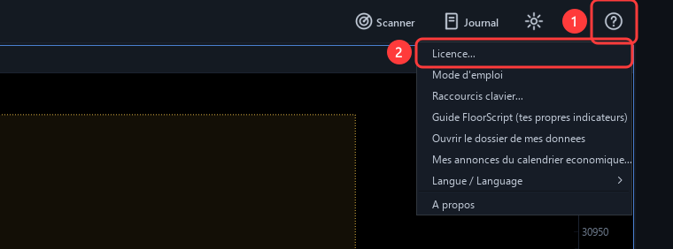
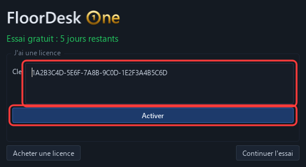
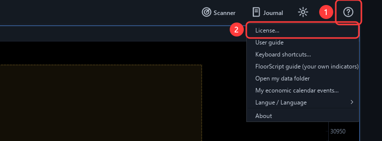
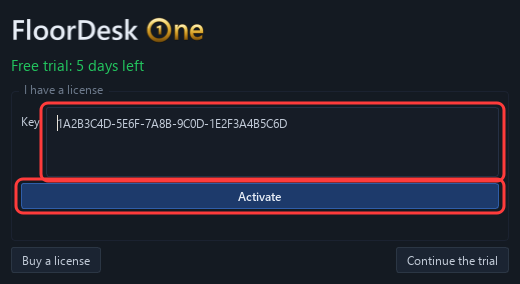
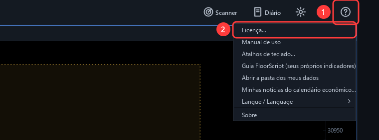
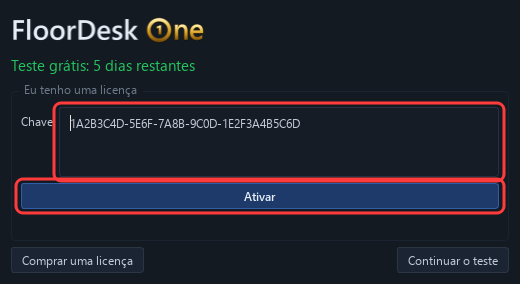
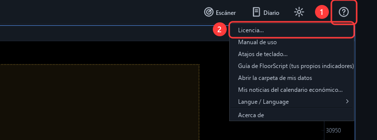
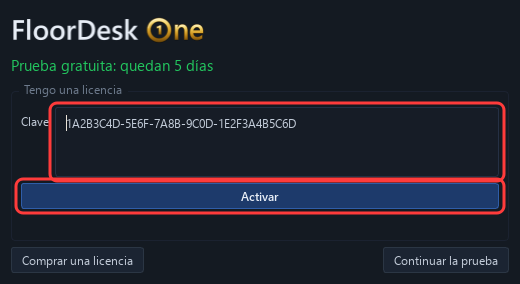

Ton téléchargement démarre…
Merci ! FloorDesk One se télécharge (Windows 10 et 11). Sinon, clique sur le bouton :
Télécharger FloorDesk One- Lance l'installateur. Si Windows affiche « Windows a protégé votre ordinateur » : Informations complémentaires puis Exécuter quand même.
- Ouvre FloorDesk One. Sans clé, tu as 7 jours d'essai gratuit.
- Tu as acheté un abonnement ? Copie la clé reçue par email, puis menu ? → Licence, colle-la et clique sur Activer. Voir en images
Activer ta clé de licence
Tu as acheté un abonnement ? Ta clé est dans l'email de Lemon Squeezy (objet : ta commande FloorDesk One). Garde-le.
Dans FloorDesk One, clique sur le bouton ? tout en haut à droite. Choisis Licence...

Colle ta clé dans la case Clé (clic droit → Coller, ou Ctrl+V), puis clique sur Activer. C'est fait : « Licence activée ».

Tu changes d'ordinateur ? Même fenêtre, bouton « Libérer cette licence sur ce PC », puis active ta clé sur le nouveau PC. Une licence marche sur 1 PC à la fois.
Une question ? contact@floordeskone.com
Your download is starting…
Thank you! FloorDesk One is downloading (Windows 10 and 11). If not, click the button:
Download FloorDesk One- Run the installer. If Windows shows "Windows protected your PC": More info, then Run anyway.
- Open FloorDesk One. Without a key you get a 7-day free trial.
- Bought a subscription? Copy the key from your email, then menu ? → License, paste it and click Activate. See with pictures
Activate your license key
Bought a subscription? Your key is in the Lemon Squeezy email (subject: your FloorDesk One order). Keep it.
In FloorDesk One, click the ? button at the top right. Choose License...

Paste your key in the Key box (right-click → Paste, or Ctrl+V), then click Activate. Done: "License activated".

Switching computers? Same window, "Release this license on this PC" button, then activate your key on the new PC. One license works on 1 PC at a time.
Questions? contact@floordeskone.com
Seu download está começando…
Obrigado! O FloorDesk One está sendo baixado (Windows 10 e 11). Se não começar, clique no botão:
Baixar o FloorDesk One- Execute o instalador. Se o Windows mostrar « O Windows protegeu o computador »: Mais informações e depois Executar assim mesmo.
- Abra o FloorDesk One. Sem chave, você tem 7 dias de teste grátis.
- Comprou uma assinatura? Copie a chave recebida por e-mail, depois menu ? → Licença, cole e clique em Ativar. Ver com imagens
Ativar a sua chave de licença
Comprou uma assinatura? A sua chave está no e-mail da Lemon Squeezy (assunto: o seu pedido FloorDesk One). Guarde-o.
No FloorDesk One, clique no botão ? no canto superior direito. Escolha Licença...

Cole a sua chave no campo Chave (botão direito → Colar, ou Ctrl+V) e clique em Ativar. Pronto: « Licença ativada ».

Vai trocar de computador? Na mesma janela, botão « Liberar esta licença neste PC », depois ative a chave no novo PC. Uma licença funciona em 1 PC por vez.
Dúvidas? contact@floordeskone.com
Tu descarga está comenzando…
¡Gracias! FloorDesk One se está descargando (Windows 10 y 11). Si no, haz clic en el botón:
Descargar FloorDesk One- Ejecuta el instalador. Si Windows muestra «Windows protegió su PC»: Más información y luego Ejecutar de todas formas.
- Abre FloorDesk One. Sin clave, tienes 7 días de prueba gratis.
- ¿Compraste una suscripción? Copia la clave recibida por email, luego menú ? → Licencia, pégala y haz clic en Activar. Ver con imágenes
Activar tu clave de licencia
¿Compraste una suscripción? Tu clave está en el email de Lemon Squeezy (asunto: tu pedido FloorDesk One). Guárdalo.
En FloorDesk One, haz clic en el botón ? arriba a la derecha. Elige Licencia...

Pega tu clave en la casilla Clave (clic derecho → Pegar, o Ctrl+V) y haz clic en Activar. Listo: «Licencia activada».

¿Cambias de computadora? En la misma ventana, botón «Liberar esta licencia en este PC», y luego activa tu clave en el nuevo PC. Una licencia funciona en 1 PC a la vez.
¿Preguntas? contact@floordeskone.com